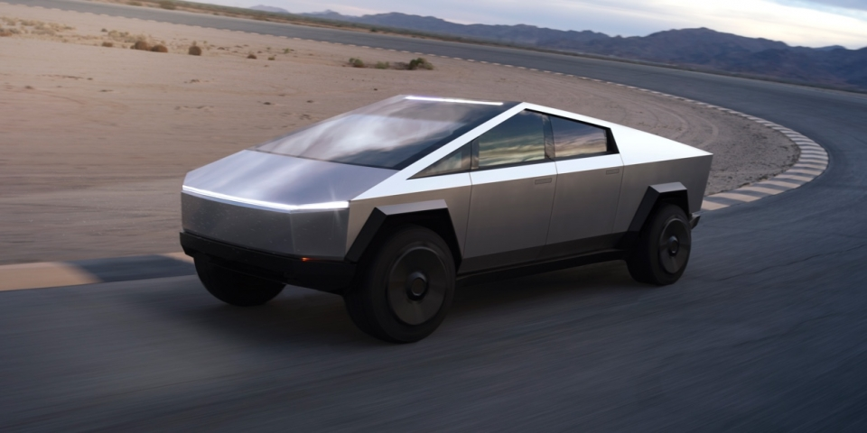

테슬라는 전기자동차 제조업체이다.
부가적으로 에너지 저장 장치도 제조하고 있다.
상호명은 니콜라 테슬라로부터 따왔으며 2003년 창립 이래 2017년까지
46억 달러의 적자를 기록하는 등 생존 전망마저 불투명하다는 지적이 많았으나,
2019년 말부터 흑자 전환에 성공했다.
다만 탄소배출권 판매로 흑자전환에 성공한 것이라,
지속성에 대해 의구심도 많이 받고 있다.
테슬라는 Changing perception(인식의 변화)를 슬로건으로 사용하고 있다
